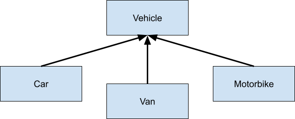

- Modularization - breaking down a major application into many small “modules”
- Re-using code - writing code that others can reuse, enabling programmers to collaborate
Sponsored by Replit

OOP
14pts
Python
Java
C++
Data
General
Object-oriented programming and why it's the most dominant programming paradigm
Warning: This article covers advanced material and concepts. In the HCPSS Programming Career Academy, Object-Oriented Programming is briefly covered in AP CS A (taken by 11th graders) and extensively covered in Advanced Object-Oriented Design (taken by 12th graders).
Object-oriented programming (OOP) is an approach to organizing code into classes and objects, and it enables programmers to connect data to its behavior easily. All three programming languages covered in this event support OOP, although some can also support other programming paradigms. OOP is the most dominant modern programming paradigm because it’s designed to encourage two important CS concepts:
There are four main features to every object-oriented programming paradigm that support those two concepts and make OOP very powerful:
- Classes
- Objects
- Inheritance
- Polymorphism
Classes
An OOP class is a way to organize concepts that have certain notions in common. All objects built off a class will share essential characteristics as well as differ from one another. A close analogy is an animal species; all dogs share the “class” characteristics of being able to run, having four legs, and fur, yet still differ in the “object” characteristics of their running speed, the length of their legs, and the color of their fur.
Classes have two major components:
- States - data that is stored in the class (but may not include the values of the data)
- Methods - the behavior of the class (how the object interacts with its data; methods are shared across all objects built using the same class, but they will behave differently depending on the object’s state)
Objects
Objects are an instance of a class, meaning that they realize the concepts outlined in a class. Using the animal analogy, a class of dogs contains all the features (states) that all dogs have, but a dog object will have concrete parameters that make that specific dog unique compared to other dogs. A dog class might contain a state for height, but a dog object will contain the actual height; some dogs will be taller, and some dogs will be shorter.
For example, we could build user accounts on this website using classes and objects. Our class includes states and methods all users have:
- States (data that is stored in the class) - first name, last name, current point value
- Methods (the behavior of the class) - adding points to a user, retrieving points
Let’s write the code for this class and test it using objects built from the class.
Code:
class user:
# states
firstName = ""
lastName = ""
points = 0 # all users start with 0 points
# constructor method that is always called when an object is initialized
# this should only include code that every object needs to run before use
def __init__(self, firstName, lastName):
self.firstName = firstName # "self" keyword refers to the current object
self.lastName = lastName
# other methods
def addPoints(self, addedPoints):
self.points += addedPoints
# this code tests our class
JLo = user("Jennifer", "Lopez")
ARod = user("Alex", "Rodriguez")
# test our addPoints method
JLo.addPoints(5)
ARod.addPoints(10)
print(JLo.points)
print(ARod.points)
> 5
> 10
> 10
Code:
public class user{
// this main function tests our class
public static void main(String[] args){
user JLo = new user("Jennifer", "Lopez");
user ARod = new user("Alex", "Rodriguez");
// test addPoints method
JLo.addPoints(5);
ARod.addPoints(10);
System.out.println(JLo.points);
System.out.println(ARod.points);
}
// states
String firstName;
String lastName;
int points;
// constructor method that is always called when an object is initialized
// this should only include code that every object needs run before use
user(String firstName, String lastName) {
this.firstName = firstName; // "this" keyword refers to the current object
this.lastName = lastName;
points = 0; // all users start with 0 points
}
// other methods
void addPoints(int addedPoints) {
points += addedPoints;
}
}
> 5
> 10
> 10
Code:
#include <bits/stdc++.h>
using namespace std;
class user {
public:
// states
string firstName;
string lastName;
int points;
// method declarations (but not their definitions)
user(string firstName, string lastName);
void addPoints(int addedPoints);
};
// method definitions
// constructor method that is always called when an object is initialized
// this should only include code that every object needs to be run before use
user::user(string firstName, string lastName) {
this->firstName = firstName; // "this" keyword refers to the current object
this->lastName = lastName;
points = 0; // all users start with 0 points
}
// other methods
void user::addPoints(int addedPoints) {
points += addedPoints;
}
// this main function tests our class
int main()
{
user JLo("Jennifer", "Lopez");
user ARod("Alex", "Rodriguez");
// test addPoints method
JLo.addPoints(5);
ARod.addPoints(10);
cout << JLo.points << "\n";
cout << ARod.points << "\n";
return 0;
}
> 5
> 10
> 10
Notice that we have two objects, one named
JLo
and one named ARod
, built using the user class. The class only contained the data types that the object should include, but the object contained the actual data values. In addition, note that when we modified the points of one user, it did not affect the other user.
Note: This website uses much more complex code behind the scenes to keep things working- this example is for demonstration purposes only
Encapsulation
OOP encourages programmers to encapsulate their code. Encapsulation is where the mechanics behind code is hidden, but the overall function and interface to use the function are shown. For example, your television may have buttons for changing the volume, changing channels, etc. While most people do not understand the underlying mechanisms, they know how to use the interface (the remote) and use the television effectively.
An interface is the collection of functionality (states and methods) that the programmer can interact with. The interface of our user class can be most clearly seen in the C++ example above, where the class declaration includes all the states and methods available to the programmer, but the methods are defined separately.
Inheritance
Suppose you want to represent concepts that share many characteristics using classes. Instead of creating classes for each one containing many overlapping features, you can use inheritance. Inheritance is a way to organize classes to store their differences better.
For example, if you wanted to create classes for different vehicles, you could first create a vehicle class containing all the features common to all vehicles (e.g., current gas amount, speed, maximum occupancy, etc.). Then, you can create a child class that inherits all of the vehicle class’s features and enables you to add on features unique to that child class.

Polymorphism
Polymorphism in programming refers to the idea that the same methods can be used in different classes or that the same methods can be used with different parameters. There are two kinds of polymorphism, over-riding and over-loading.
Over-riding
Over-riding is when a child class requires a different implementation of an inherited method from a parent class.
For example, the throttle method of a vehicle class could increase the speed of the vehicle. However, depending on the vehicle, the throttle method is activated differently (gas pedal on a car/van vs. right handgrip on a motorbike). Therefore, we must leave the vehicle class incomplete because the throttle method will have a different implementation depending on the child. We call this type of incomplete class an abstract class. In this case, each child class should include an overridden implementation of the throttle method inherited from the vehicle parent class.
Over-loading
Over-loading is when a class requires a different implementation of a method for different parameters (must have either a different number of parameters or a different data type for the parameters). For example:
- An add method could add two given integers together:
Code:
static int add(int a, int b) {
return a+b;
}
- But you could also write an overloaded version for adding two longs together:
Code:
static long add(long a, long b) {
return a+b;
}
- Or an overloaded version for adding three integers together:
Code:
static int add(int a, int b, int c) {
return a+b+c;
}
- Or even an overloaded version for adding strings together:
Code:
static String add(String a, String b) {
return a+b;
}
At runtime, a compiler will automatically figure out which version to use and execute the appropriate code:
Code:
import java.util.*;
public class overloadingTest{
public static void main(String[] args){
System.out.println(add(2,3));
// tip - you can use scientific notation in most languages
// 1e12 = 1 * 10^12
System.out.println(add((long)1e12, (long)1e12));
System.out.println(add(2,3,6));
System.out.println(add("Hello ", "World!"));
}
static int add(int a, int b) {
System.out.println("The 1st add method was used.");
return a+b;
}
static long add(long a, long b) {
System.out.println("The 2nd add method was used.");
return a+b;
}
static int add(int a, int b, int c) {
System.out.println("The 3rd add method was used.");
return a+b+c;
}
static String add(String a, String b) {
System.out.println("The 4th add method was used.");
return a+b;
}
}
> The 1st add method was used.
> 5
> The 2nd add method was used.
> 2000000000000
> The 3rd add method was used.
> 11
> The 4th add method was used.
> Hello World!
> 5
> The 2nd add method was used.
> 2000000000000
> The 3rd add method was used.
> 11
> The 4th add method was used.
> Hello World!
Object-oriented programming is a programming paradigm highly prevalent in modern app development. It’s crucial to understand OOP to continue learning computer science.
You can play with all the code we've used in this article on Replit: